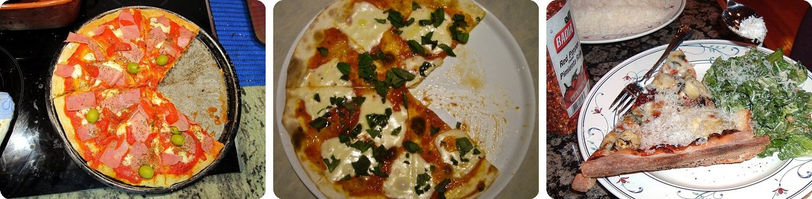
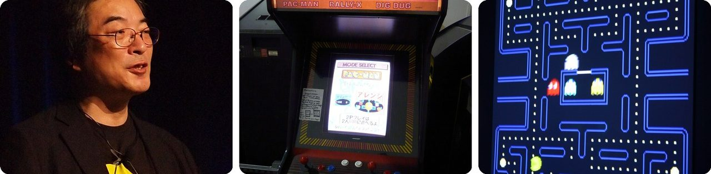
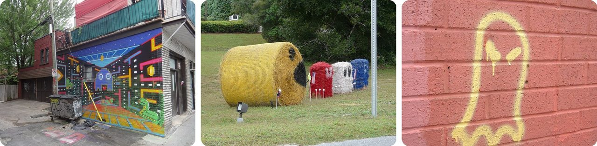
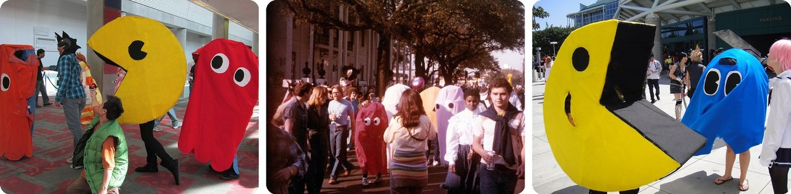
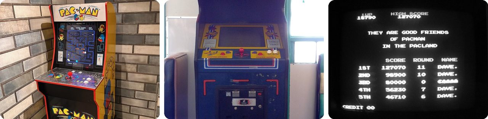
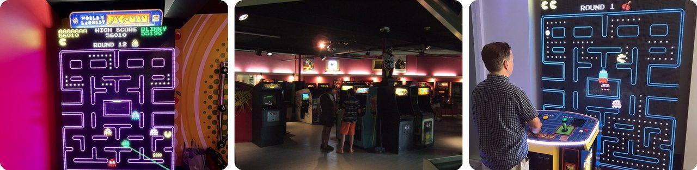
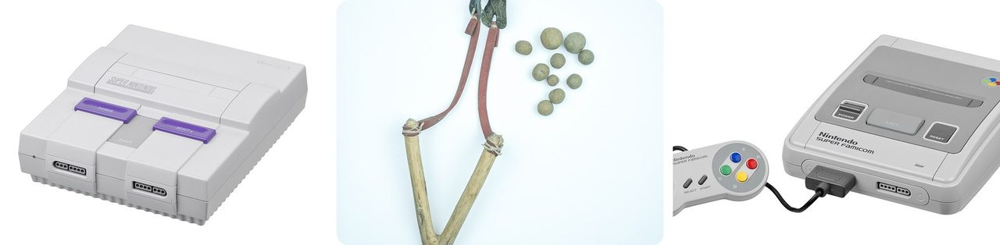
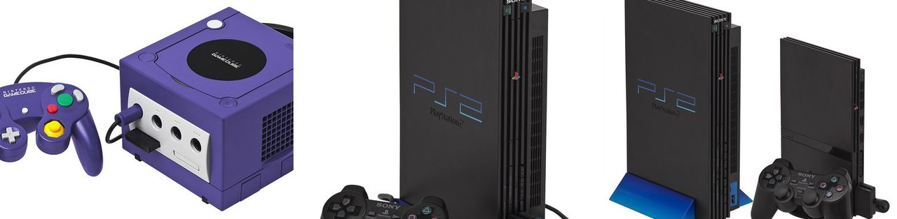
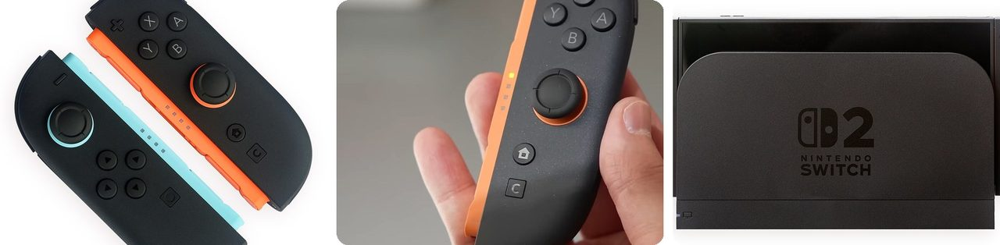

🌍 Top 10 Pac-Man Secrets, from Arcade to Switch 2
Oct 12, 2026
1. 🍕 Pac-Man's shape started with a pizza missing a slice

Toru Iwatani, the designer at the Japanese company Namco who made Pac-Man, has often told this story: he was eating lunch, pulled one slice out of a pizza, and saw a round face with an open mouth.
In a 1986 interview he admitted that's only half the story. He also took the Japanese character 口 (kuchi, which means "mouth"), a little square, and rounded off its corners until it became a circle.
So the hero of the most famous arcade game ever is a pizza and a mouth at the same time.
2. 🇯🇵 Pac-Man was first called "Puck Man"

In Japanese, paku paku is the sound of a mouth snapping open and shut while gobbling food, like "chomp chomp" in English. Iwatani named his game Pakkuman, and players in Tokyo first tried it on May 22, 1980, as Puck Man.
Before shipping it to America, Namco's bosses got nervous. They worried pranksters would scratch the "P" on the machines into a different letter and turn the name into a rude word. So they renamed it Pac-Man. For a short time, early American ads even called it Snapper.
Making it took a year and five months, the longest any video game had taken up to then.
Think of it as a game named "Mr. Chomp-Chomp."
3. 👻 Each ghost hunts Pac-Man in its own way

The four ghosts aren't just copies of each other. Blinky (red) chases you straight on. Pinky (pink) tries to get in front of you to cut you off. Inky (cyan) also tries to get ahead, with a trickier plan. Clyde (orange) chases you when you're far away, then wanders off when he gets close.
Their Japanese names give it away: Oikake means "chaser," Machibuse "ambusher," Kimagure "the one who keeps changing his mind," and Otoboke "playing dumb." Iwatani mixed them up on purpose so the game wouldn't be too easy or impossibly hard.
And here's the twist: Namco's president wanted all four ghosts to be red. Iwatani asked his coworkers to vote, and they picked colors 40 to 0.
It's like playing tag against four kids who each have a different plan.
4. 🎭 The ghosts might just be people in costumes

Between some levels, Pac-Man plays a short funny cartoon, called a cutscene. Iwatani added them so players could take a breath from all the chasing. Pac-Man is often listed as one of the first games ever to have cutscenes.
Watch the one after level 5. Blinky is chasing Pac-Man when his ghost sheet snags on a nail and rips, and you can see a leg sticking out underneath.
In a later cartoon, Blinky runs off the screen and comes back dragging his red costume behind him.
So the scariest monster in the arcade might be someone hiding under a sheet.
5. 🥬 Power pellets came from Popeye's spinach
Popeye is an old cartoon sailor who gulps down a can of spinach and suddenly gets super strong for a while. Iwatani loved that idea and borrowed it.
Near each corner of the maze sits a big flashing dot, the power pellet. Eat one → the ghosts turn blue, look dizzy and run away → now you can eat them. Their eyes then float back to the box in the middle, where the ghost grows back. Eat several in a row and each one is worth more points.
Pac-Man was the first video game with power-ups, so every mushroom and star in later games owes it a thank-you.
Basically, a can of spinach that flips the chase around.
6. 💥 Level 256 of Pac-Man is impossible to finish

The game keeps track of what level you're on with a number that can only count up to 255. When you reach level 256, the number overflows, like a car's mileage counter rolling past its last digit. The level loads all wrong, and nobody can finish it. Gamers call this the kill screen.
That's why the perfect score is exactly 3,333,360 points. To get it, you eat every dot, power pellet, fruit and blue ghost on all 255 levels without dying once, then use up all six lives scoring on broken level 256.
In 1999 a famous player offered $100,000 to anyone who could get past level 256 before the year 2000. Nobody did.
Think of it as a game that runs out of numbers before you run out of coins.
7. 🏆 More Americans recognize Pac-Man than Mario

In 2009, Guinness World Records said 94% of Americans recognize Pac-Man. Mario came in just behind, at 93%.
Pac-Man also holds the Guinness record for the most arcade machines of one game ever installed around the world: 293,822. In 2010, Iwatani was handed the certificate in person.
In its first year in the US, Pac-Man machines took in more than $1 billion in quarters. That's over 4 billion quarters, more money than the movie Star Wars had made.
In other words, a yellow circle beat a plumber by one point.
8. 🎯 In Pac-Man 2 you don't control Pac-Man at all

Pac-Man 2: The New Adventures came out in 1994 for the Super Nintendo (in Japan it was Hello! Pac-Man). It isn't a maze game. Pac-Man walks around town at his own pace, and all you get is a slingshot.
You shoot at things to point him where to go or catch his eye. Knock an apple off a tree → he eats it → he's happier. Hit him in the face → he gets grumpy or sad. But make him too happy and he gets cocky and stops listening to you.
When he spots a ghost, he panics and runs in circles. Feed him a power pellet from your bag and he turns into Super Pac-Man, who flies and eats ghosts.
It's like babysitting a cartoon instead of being one.
9. 🍒 In Pac-Man World 2, the ghosts free the real villain by accident

Pac-Man World 2 came out in 2002 for the GameCube, PlayStation 2 and Xbox, and it turned Pac-Man into a 3D jumping hero. The story: hundreds of years ago, an evil ghost named Spooky ruled Pac-Land. A wizard made five ordinary fruits into magic Golden Fruit, and a knight used them to lock Spooky under a tree in Pac-Village.
Then Blinky, Inky, Pinky and Clyde sneak into the village one night to cause trouble. They steal the Golden Fruit without knowing what it's for, and Spooky breaks free.
Pac-Man travels across Pac-Land and over the ocean to Ghost Island to win the fruit back. There are 25 levels in all, and the arcade tokens you collect unlock real old Pac-Man games you can play inside Pac-Village's arcade.
Basically, a prank that went very, very wrong.
10. 🎮 Pac-Man World 2 Re-Pac adds time travel and a toilet-paper twist

Pac-Man World 2 Re-Pac came out on September 26, 2025, for Nintendo Switch 2 and other systems, rebuilt from scratch. A second player can join as the Pac-Drone, a floating helper that attacks enemies and grabs goodies. Got a physical copy? Flip the paper cover inside the case: the back is a copy of the original 2002 box art.
The story gets a new ending: Pac-Man's kids, Pac-Boy and Pac-Sis, go missing. Pac-Man falls through a hole in the Golden Fruit tree and lands hundreds of years in the past. He locks Spooky away himself, which makes Pac-Man the knight from the history books all along.
Then Toc-Man attacks him, angry he wasn't invited to Pac-Man's birthday. Turns out the invitation came. Toc-Man used it as toilet paper by mistake.
Pac-Man got his own time-travel movie, with a toilet-paper ending.
Fun fact
Pac-Man's famous munching sound started at a meeting where Iwatani ate fruit as noisily as he could and made gurgling noises, so composer Toshio Kai could hear what he wanted. Kai turned those mouth sounds into one of the best-known noises in gaming. Lots of game and movie sounds are made the same way, by recording everyday things up close. Next time: the surprising everyday objects behind famous sound effects.
Photo credits (Wikimedia Commons)
- #1: PacMan IMG 5652 (8503742931).jpg by Dario Alvarez from Orense, España, CC BY 2.0
- #1: Pac-Man Pizza [squared circle] (flickr) by Mr Wabu, CC BY-SA 2.0
- #1: Pizza slice (2382761254).jpg by Glen Edelson from ATLANTA, USA, CC BY 2.0
- #2: Toru Iwatani, creator of Pac-Man, at GDC 2011 (cropped to upper body).jpg by Official GDC, CC BY 2.0
- #2: Musée Mécanique 183.JPG by User:Piotrus, CC BY-SA 3.0
- #2: Toru Iwatani: Pac-Man (flickr) by Ryan Somma, CC BY 2.0
- #3: Pac-Man graffiti in Mile End.jpg by Bohemian Baltimore, CC BY-SA 4.0
- #3: Hay bale Pacman.jpg by The Bushranger, CC BY-SA 4.0
- #3: Pac-Man Ghost in 'tunnel' (flickr) by Denna Jones, CC BY 2.0
- #4: Pac-Man cosplayers at FanimeCon 2010-05-29 2.JPG by BrokenSphere, CC BY-SA 3.0
- #4: Mardi Gras Day 1981 New Orleans Walking Video Ghosts.jpg by Infrogmation of New Orleans, CC BY-SA 4.0
- #4: Anime Expo 2010 - LA - Pac-Man and ghost (4836634093).jpg by The Conmunity - Pop Culture Geek from Los Angeles, CA, USA, CC BY 2.0
- #5: Popeye Statue at the Spinach Capital of the World - Crystal City Texas (53270851166).jpg by formulanone, CC BY-SA 2.0
- #5: Spinach leaves.jpg by Nillerdk, CC BY 3.0
- #5: Spinach 4.jpg by suhayl, CC BY-SA 4.0
- #6: Pac-Man arcade machine, De Notaris Schaijk.jpg by YosemiteYamper, CC BY-SA 4.0
- #6: Super Pac-Man - Bally Midway Namco arcade cabinet.jpg by Marshall Astor from San Pedro, United States, CC BY-SA 2.0
- #6: Pacman (flickr) by Jon_Callow_Images, CC BY 2.0
- #7: Hollywood Guinness Museum - World Largest Pac-Man in July 2022 (2).jpg by Benoît Prieur, CC0
- #7: Flashbacks arcade, Seaside Heights, NJ, 7/22/08 - 1 of 5 (flickr) by goodrob13, CC BY 2.0
- #7: World's Largest Pac-Man Game.jpg by daryl_mitchell, CC BY-SA 2.0
- #8: Nintendo-Super-NES-Console-FL.jpg by Evan-Amos, Public domain
- #8: Slingshot - গুলতি - DSC00532.jpg by Moheen, CC BY-SA 4.0
- #8: Nintendo-Super-Famicom-Set-FL.jpg by Evan-Amos, Public domain
- #9: GameCube-Set.jpg by Evan-Amos, Public domain
- #9: PS2-Fat-Console-Set.jpg by Evan-Amos, Public domain
- #9: PS2-Versions.jpg by Evan-Amos, Public domain
- #10: Nintendo Switch 2 Joy-Con 2 Blue and Orange.jpg by Crisco 1492, CC BY-SA 4.0
- #10: Nintendo Switch 2 (flickr) by xloopkill, CC BY 2.0
- #10: Nintendo Switch 2 in Docking Console.jpg by Crisco 1492, CC BY-SA 4.0
.jpg){kind=link}
.jpg){kind=link}
.jpg){kind=link}


.jpg){kind=link}
.jpg){kind=link}


.jpg){kind=link}